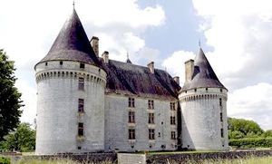
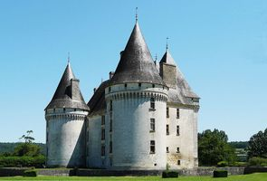
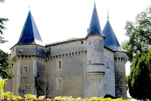
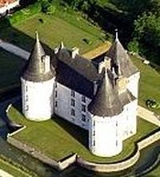
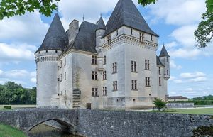
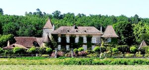
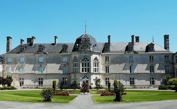
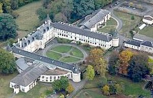
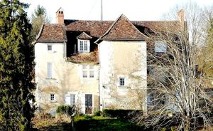

Recensement Jean-Claude Truffet









| Département | 24 — Dordogne |
| Canton | Savignac les Eglises |
| Commune | Antonne-Trigonant |
| Type d'édifice | Château |
| Période d'origine | XV-XVII |
| Coordonnées GPS | 45° 12' 29,3" Nord, 0° 49' 0,1" Est. Bories grav 1-2-3-4 GPS : 45° 13' 09,3" Nord et 0° 50' 35,1" Est. Lanmary grav 6-7-8 GPS : 45° 14' 27" Nord 0° 48' 56" Est. Le Pot grav 7 |
Trois châteaux à Antonne-Trigonant celui Des Bories du XVe et XVIe siècles, inscrit aux M.H. De Lanmary, XVe et XVIIIe siècles.
BORIES En 1497, Jeanne de Hautefort, veuve de Jean de Saint Astier, fait construire un château en ce lieu. Durant les guerres de Religions (1562 à 1598), le château subit au moins 2 sièges. En 1604, est remanié. En 1792, est réquisitionné par les révolutionnaires. Au XIXe siècle, le bâtiment appartient à nouveau à la famille Saint Astier. En 1891, Saint Astier le vende au comte de Paris. En 1911, la famille des Nervaux-Loys entreprend des travaux de rénovation et passe à la famille de Lary de Latour par un mariage en 1971m
LANMARY, le centre hospitalier se situe dans un château féodal et renaissance construit au XIIe siècle par Hélie de Laurière et remanié jusqu'au XVIIe siècle. Puis par mariage il devient le fief de grands seigneurs: Les Beaupoil de Saint-Aulaire jusqu'en 1761, transmis par succession aux du Lau d'Allemans. En 1820, le domaine de Lanmary, comprenant le château, est vendu à monsieur Leroy comte de Barde , receveur général de la Dordogne. Le comte de Barde fait entreprendre une importante restauration progressive de tous les bâtiments de Lanmary. Au début du XXe siècle, Armand Marie Joseph Frainaud comte de la Motte Saint-Génis, achète le domaine puis racheté par le département de la Dordogne qui souhaite créer un préventorium.
TRIGORANT Sur les bases d'un ancien manoir qui dépendait de la châtellenie d'Auberoche, le château actuel fut construit au XVe siècle. La famille Du Puy semble être la première famille, Au XVIIe siècle,les Cugnac de Caussade deviennent les nouveaux propriétaires. Il est inscrit au titre des M.H. depuis le 12 octobre 1948
BORIES, entouré de douves se présente sous la forme d'un logis orienté est-ouest, flanqué d'une tour carrée au sud et de deux tours rondes aux angles nord-est et nord-ouest. La construction commença en 1494 , sur les restes d'un ancien manoir. Il a été achevé en 1604, il fut assiégé à plusieurs reprises lors des guerres de religion puis lors de la Fronde. Il est classé M.H. depuis le 29 mars 1974. LANMARY, de lancien rmanoir déjà cité au XIIIe siècle subsistent les quatre tours rondes du XVe siècle pourvues de mâchicoulis. Le logis actuel date du XVIIIe siècle, date du XIXe siècle il a la forme d'un carré ouvert à louest avec un logis à lest et deux ailes en équerre au nord et au sud, le tout flanqué d'une tour ronde à chaque extrémité. De lancien repaire noble déjà cité au XIIIe siècle subsistent les quatre tours rondes du XVe siècle pourvues de mâchicoulis. Le château de Lanmary est devenu un établissement d'hébergement pour personnes âgées dépendantes (EHPAD). n'est pas inscrit ni classé aux M.H. TRIGONANT, établi sur une hauteur surplombant la vallée de l'Isle, il se présente sous la forme d'un petit logis orienté nord-est - sud-ouest, flanqué de quatre tours, le tout entouré de mâchicoulis. Deux tours rondes se trouvent sur la façade regardant l'Isle ; un donjon carré, une tour d'escalier à pans et une tourelle en encorbellement sont placés sur la face opposée. Les meneaux ont été remplacés par des fenêtres à petits carreaux.
Bories Famille des Nervaux-Loys Lanmary Monsieur Leroy Trigognant Famille Du Puy
"
Trois châteaux à Antonne-Trigonant , celui de Trigonant Grav 5 GPS : 45° 12' 29,3" Nord, 0° 49' 0,1" Est. Bories grav 1-2-3-4 GPS : 45° 13' 09,3" Nord et 0° 50' 35,1" Est. Lanmary grav 6-7-8 GPS : 45° 14' 27" Nord 0° 48' 56" Est. Le Pot grav 7